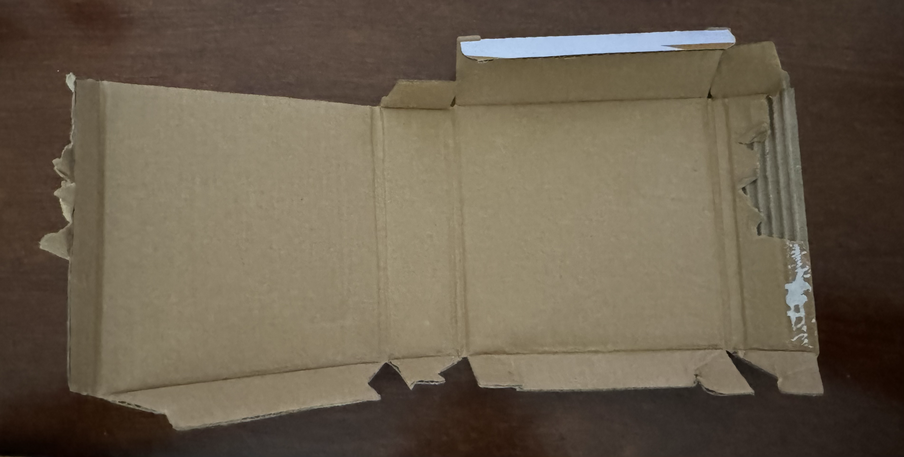
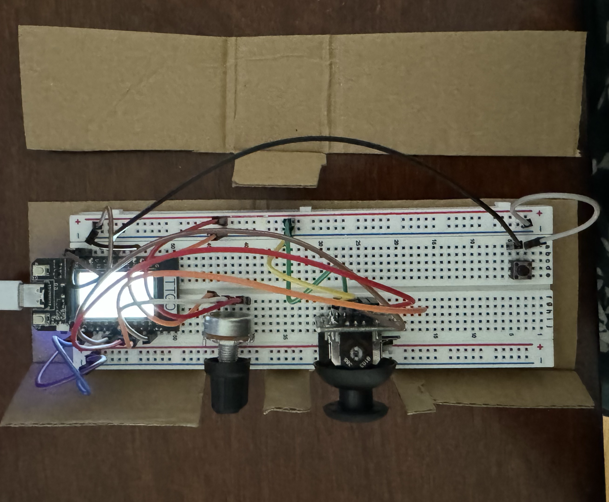

The bottom portion of the display was broken, disrupting the flow of the visual narrative. But I tried to embrace the imperfection as a metaphor for the fractured nature of the human experience.
Incorporating the hanging structure into the metaphor, the piece can be interpreted as a symbol for navigating the currents of time and space. As the device twists and twirls under the air vent, it invites viewers to reflect on the fluidity of existence and the transient nature of our journey through life.
Creative Decisions
As students, we oscillate between moments of reassurance and moments of doubt, caught in a perpetual daily cycle of striving and questioning.
Central to this project was the concept of a 24-second loop. The loop's structure serves as a microcosm of the temporal constraints and emotional fluctuations we endure throughout the day.
60% of the time is dedicated to plastering the words "It'll be okay" across the screen, representing a student's attempt at calming themselves.
But these messages are repeatedly interrupted (at random) by anxiety-riddled messages (selected at random) that ultimately take up 20% of the 24-second loop.
Only 10% of the loop is dedicated to respite (the ESP enters deep sleep during this time) from the constant ebb and flow of stress, underscoring the fleeting nature of solace.
The intentional imbalance mirrors the internal struggles of many students who are navigating the tumultuous currents of academic and personal life.
There's a poignant risk embedded within the design—an imbalance in energy expenditure that will ultimately cause the ESP to run out of battery before the display is taken down.
The disproportionate allocation of energy toward anxiety and attempts at reassurance serves as a metaphor for the delicate balance between emotional resilience and vulnerability and the risk of never finding balance.
It's a stark reminder of the fact that many of the resources at our disposal are finite, and as a result, it highlights the importance of mindful energy management.
Color was an important consideration as well. In contrast to the vibrant colors used for the calming messages, the anxiety-inducing phrases are deliberately in black and white.
It's meant to reflect the starkness and clarity with which anxiety can sometimes manifest in our lives, devoid of the colorful nuances that characterize moments of comfort and reassurance.
I also intentionally placed the anxious messages towards the bottom right corner of the display to serve as a visual metaphor for the creeping presence of anxiety, lurking at the periphery of our consciousness and gradually encroaching upon our thoughts and emotions.
Technical Issues Encountered
Configuring the TFT display and managing its backlight intensity required some experimentation. Synchronizing the display of messages with precise timing also took some testing and refinement.
The most notable issue was getting the ESP to show up my Arduino IDE, which proved to be a significant roadblock in the initial stages of the project.
After some digging, I stumbled upon a tutorial on YouTube, which provided invaluable insights into resolving the issue.
It's also crucial to have a good USBC connection, and it may help to have this driver installed.
README
Follow these instructions to create a similar generative art display using an ESP32 microcontroller and a TFT display that alternates between soothing messages and anxiety-inducing phrases, reflecting the ebb and flow of human emotion within a 24-second loop.
ESP Setup
Install the Arduino IDE from the official website.
Install the ESP32 board support package in the Arduino IDE. Follow the instructions here.
Install the TFT_eSPI library by Bodmer. Go to Sketch > Include Library > Manage Libraries..., search for "TFT_eSPI" and install it.
Connect your ESP32 board to your computer via USB.
After uploading the code, the generative art display will start running immediately. The display alternates between soothing messages, displayed in random colors, and anxiety-inducing phrases, displayed in black and white towards the bottom right corner of the screen.
The display operates within a 24-second loop, with 60% of the time dedicated to soothing messages, 20% to anxiety-inducing phrases, and 10% to deep sleep mode to conserve power.
Building the Display
Use heat shrink to build a battery setup (with a 130mAh battery) that will be compatible with the board. Remember that black wires should never be connected with red wires!
Connect the battery to the board.
Design an envelope with a rectangular hole in the center for the ESP display. Write calming messages in different colors horizontally across the envelope; in smaller letters, add anxious messages in black letters vertically towards the bottom.
Poke a small hole in a popsicle stick and string a thread through the hole. Tie one end of the string to the popsicle stick. Wrap the string around the width of the popsicle stick and tie it again. The majority of the string should hang from the popsicle stick.
Poke a small hole in the envelope and pull the string through the hole and tie it. The envelope should be hanging from the popsicle stick.
Use tape to fasten the ESP (the display should poke out a bit through the rectangular hole in the paper) and the battery inside the envelope and seal it shut.
Place the popsicle stick between beams underneath the air vent on the 5th floor lounge in Milstein.
Troubleshooting
If you encounter any issues during installation or usage, check out the following resrouces:
For troubleshooting ESP32 board recognition in Arduino IDE, watch this tutorial.
If you're still having trouble, check your USB connection, and try downloading the device driver for your OS and restart your machine.
Module 2
The Final Product
High-level description
This interactive installation features an ESP32 TTGO T-display, which acts as the brain of the operation, connected to a pushbutton, a joystick, and a potentiometer.
These components are housed in a cardboard enclosure and are powered by a wired connection, ensuring continuous operation without the need for batteries.
The button, joystick, and potentiometer allow users to interact with the device, with each input influencing the visual output displayed on a laptop.
The ESP32 reads the state of these inputs and sends the data over a WiFi connection to a laptop, where custom software visualizes this data by dynamically
generating a lava lamp display on the screen.
From a technical standpoint, I developed an ESP32 program that continuously collects sensor data from the hardware inputs.
This data is then packaged and transmitted via a WiFi connection to the laptop. On the software side, a Python script running on the laptop uses this data to adjust the colors,
patterns, and animation speed of the lava lamp visualization in real-time, creating an engaging multimedia experience.
The button rotates through color schemes (5 of which are pre-determined; the final one is randomized) for the graphic, the potentiometer value determines the brightness of the graphic, and the joystick determines the rate at which the graphic is updateded.
The integration of hardware and software allows for an interactive installation that responds immediately to user interactions,
offering a blend of technology and art.
The installation creates visual outputs that are not manually pre-determined but instead are dynamically generated based on real-time interactions with the viewer.
Each interaction—-adjusting the potentiometer, moving the joystick, or pressing the button—-alters the algorithmic behavior that governs the visualization of the lava lamp,
resulting in unique and ever-changing artistic patterns. This method ensures that the art displayed is constantly evolving, reflecting the immediate input from its viewers.
The unpredictability and variability of the output, driven by the algorithm's response to human interaction, embody the core principles of generative art,
making the installation not just a piece of technology but a living artwork that creates new experiences with each interaction.
Creative Decisions
the choice of colors plays a significant role in the visual and interactive experience.
The palette includes vibrant and diverse hues—deep blues and purples for a touch of mystery, bright yellows and reds to evoke warmth and energy, and calming greens and cyans.
These colors shift and blend dynamically in response to user interactions through the joystick and potentiometer, allowing participants to directly influence the visual display.
This setup not only makes the installation visually appealing but also engages users by giving them control over the color transformations, enhancing the interactivity of the piece.
The use of such a colorful array underscores the playful and engaging nature of the installation, inviting users to explore the impact of their actions on the evolving art piece.
README
ESP Setup
Start by placing the ESP on your breadboard, ensuring that the header pins are already soldered to it.
Connect a 3V pin from the ESP to one of the positive (+) strips on your breadboard.
Similarly, connect a Ground (GND) pin from the ESP to one of the negative (-) strips on your breadboard.
Insert your potentiometer into the breadboard.
Connect the left pin of the potentiometer to the negative (-) strip, the middle pin to pin 36 on the ESP, and the right pin to the positive (+) strip.
Place your pushbutton on the breadboard.
Connect one of the pushbutton's top pins (either left or right) to the positive (+) strip and one of the bottom pins to pin 15 on the ESP.
Insert your joystick into the breadboard.
For the joystick wiring, connect the left-most pin to the negative (-) strip, the second pin from the left to the positive (+) strip, the VRX pin to pin 33 on the ESP, the VRY pin to pin 39 on the ESP, and the SW pin to pin 38 on the ESP.
Finally, plug your ESP to your computer, upload the provided code to the microcontroller, and once it is running, execute this code on your laptop.
Enclosure
Begin with a cardboard box.

Trim the cardboard so that it leaves a small margin around the breadboard.

Create a flap next to the potentiometer and joystick, and cut openings in the flap to allow easy access to these controls.
Construct a frame around the breadboard using leftover cardboard pieces, and form a partial cover over most of the wires to keep them contained within the enclosure, ensuring all components remain accessible.
Troubleshooting/Technical Issues Encountered
Blocking: The program involves continuous network communication to receive data from the ESP32, and a GUI that displays changing visual data based on the received inputs. Both processes are continuous and potentially long-running,
so running these tasks on the main thread would block the GUI, making it unresponsive, or hinder timely data processing from the network because Python's tkinter module is not inherently designed to handle intensive computational tasks or blocking operations within its main event loop.
Solution: I started using threads. The udp_communication function, which handles continuous network communication, is now in a separate thread to ensure it runs independently of the GUI. This prevents the blocking network operations from interfering with the GUI responsiveness.
Meanwhile, the main thread is dedicated to updating the lava lamp.
Joystick pins: While testing the joystick alone, I could use pins 26, 25, and 33 to transmit data. But when I tested the joystick with code that involved the display, potentiometer, pushbutton, and the UDP connection, it would always read 0 for the x and y components of the joystick readings.
Solution: Change the pins. I started using pins 33 and 32 for the X and Y values.
Ground and Power: When different components (joystick and potentiometer) were connected to different ground lines and different voltage supplies (5V for the joystick and 3.3V for the potentiometer) on the same ESP32, using the joystick affected the potentiometer's output.
This could have been the result of ground loops and voltage offsets that were the product of the disparate ground connections and voltage levels.
Solution: Connect all the components to a common ground. This setup helps eliminate ground loop issues and ensures a uniform reference point for all voltage levels across the circuit, thereby stabilizing the sensor readings and preventing interference between components operating at different voltage levels.